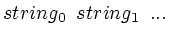

In chapter 6, you will encounter plt options that make use of yet another type of input, namely arrays of strings. String arrays can be supplied to plt using the -fs, -ts, and -tf options. These options take arguments as follows:
-fs " "
-ts " " tbc
-tf file tbc
The string argument of -fs and -ts is treated as an array of strings (words) separated by white space. The file argument of -tf is the name of a file that contains an array of strings separated by newlines (the strings may include spaces or tabs in this case). The -fs option defines the fontgroup string array; the -ts and -tf options define the text string array. In each case, strings within a string array are referred to by their index numbers, and (as for the column numbers in the data file) the index number of the first string in a string array is 0, not 1.
Entries in the text string array can be plotted in the same manner as data points, by using other options described in chapter 6, together with a data file that specifies the data coordinates and the index numbers of the strings within the text string array. The tbc argument of -tf and -ts is optional; if provided, it specifies a text box coordinate used to determine how the strings are placed relative to the coordinates specified by the data file (see chapter 4). If tbc is omitted, plt centers the strings on the specified coordinates.
The fontgroup string array associated with -fs has a different purpose; using the appropriate options, these strings can be used to set the font, line style (solid, dotted, etc.), or plotting color. Examples of the use of these options appear in chapter 6.